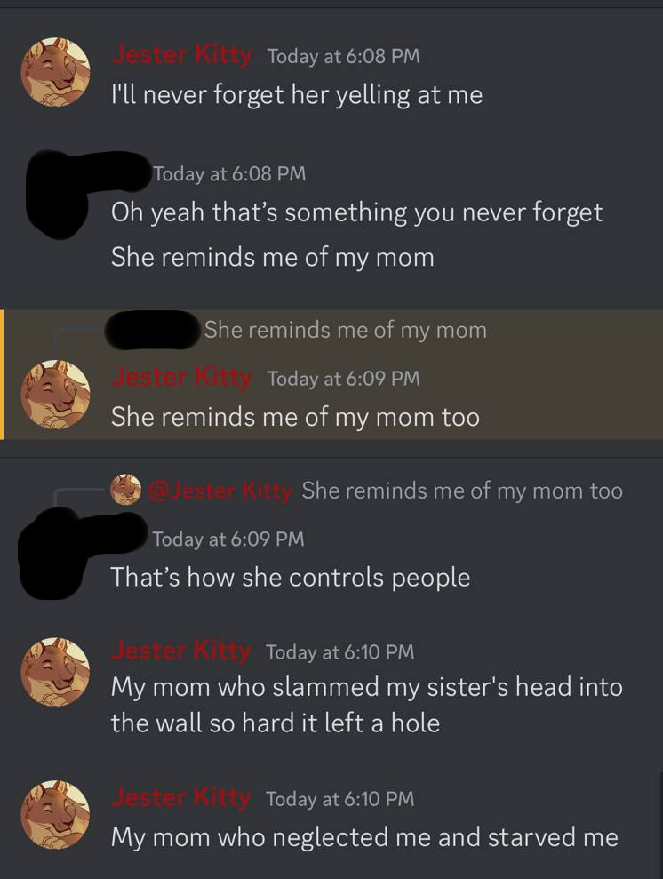

(graphic above is vent art provided by Jester Kitty. Covered under fair use.)
Jester is a minor who was used by Dan to run a hate campaign on the transphobicLSS account. Dan KNEW she was a minor, yet exposed her to pedophiles, adult situations, and an insurmountable amount of stress that made her suicidal.
Dan did not care, and kept going. Jester was even punished by Dan for "disobeying". Dan mimics the traits of an abusive parent to control minors into doing what she wants them to do.
TransphobicLSS (also known as LSS) was an account made by Dan that was supposed to call out individuals for zoophilia and pedophilia.
This account claimed to have no minors on it due to the account being embroiled in nonstop drama and dealing with the pedophiles/zoophiles directly.
(Even having a self professed pedophile on staff, but we'll get to that later.) The claim of "no minors on staff" was proven false. In the beginning, Jester was made a moderator for the LSS Twitter drama account, and was told to lie and keep quiet so that LSS could keep its credibility.


Jester was tennis ball moderator on LSS. Dan was lying about Jester's age so she could continue to use Jester. The screenshot above shows that on December 5th, they claim there are no teenagers on staff. Though, tennis ball moderator who was Jester, left on the 9th of December.

The post above admits that there is emotional drain on the staff. Jester was exposed to all of this. They also said that Jester was leaving on the 9th of December. Days after they lied about "No teenagers being on staff". Jester did not leave their circles or groups, and kept being brought around pedophiles. Even calling one of them her "dad". While also calling "Dan" her "mom".

What makes the post above so utterly disturbing is that Dan KNEW Oliver was a bona-fide self professed pedophile, yet still let Jester around him. Even DEFENDING him, to the point of Jester saying this pedophile was her "Dad".

Oliver's admission to wanting to groom teenagers above.
Dan admitting she is aware of ALL the accusations with provided evidence. This was on 12/6/22 where she acknowledges it. Dan admits it is all about revenge against Zrcalo and she does not care about who she hurts along the way.
Dan screams and yells on mic in order to get people to do what she wants them to do. She will even demand to speak on audio instead of through text so she could control people better. A lot of people with abusive parents will snap into an "obedience mode" when yelled at, which can be a PTSD response. Hence why Jester equated Dan to her mom, in a very very disturbing way.
Dan used Jester to obtain doxxes and put her in harm's way.

After Oliver was exposed as a pedophile, Dan tried to keep the exposal low-key and behind the scenes. Dan even tried to silence Oliver's victims, one of which being Jester.
Dan prioritized optics over the safety of children.
"I've was told I was a manipulator, an abuser, a liar, she hoped I was hurt, she hopes I get told to kill myself when I'm 18, that I'm just as bad as Zrcalo. It's stressed me out so much I haven't been able to eat much and I've been having nightmares. But I'm the abuser?"
Dan ignored Jester completely, only messaging her when she needed something drama related (such as getting a dox of a pedophile).
When Jester told Dan how she felt like Dan didn't care and was only using her, Dan flipped out and played the victim. After this, their relationship only went downhill. Dan started spreading lies about Jester being an abuser.

"Dan is using you just like she used us. Once you stop being useful, she will discard you."